Source: AVEVA Operations Management Interface 2023 Training Manual, Module 13 – Scripting in Graphics
Covers creating a symbol with named scripts and Action Scripts animation to navigate back through the ViewApp navigation history. (pages 693–704)
In this lab, you will create a symbol for a button and configure it with custom properties to track the current navigation item and the previous navigation item of a ViewApp at runtime. You will use custom properties in scripts and animations, add the symbol to a new pane in the Main layout, and test the behavior in a preview session.
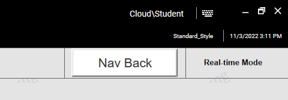
Reference: Module 13, Lab 25 — Create and Configure a Button Symbol (pages 694–695)
First, you will create a button symbol and configure it with custom properties, scripts, and animations. On the Graphics tab, in the Training \ Symbols toolset, create a symbol named BackButton and open it in the Graphic Editor. Right-click the drawing canvas and select Custom Properties to define the tracking properties.
Create two custom properties: CurrentItem (String, blank default, Private) and PreviousItem (String, blank default, Private). Both properties are set to Private visibility so they remain hidden when the symbol is embedded.
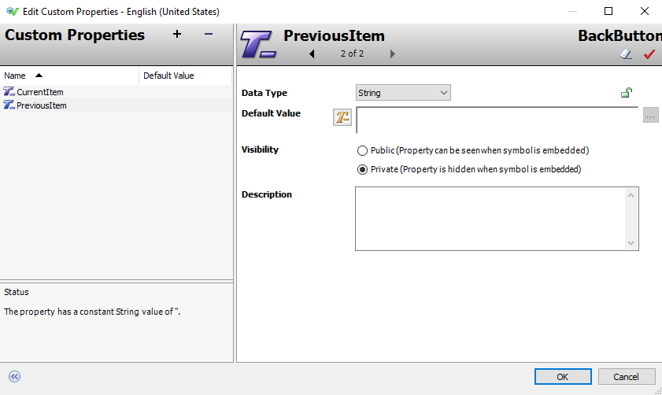
Reference: Module 13, Lab 25 — NavigationChanged Script (pages 695–696)
Right-click the canvas and select Scripts to open the Edit Scripts dialog. Click the Add button to create a named script called NavigationChanged. In the Expression field, enter MyViewApp.Navigation.Current and set the Trigger to DataChange. This script will fire whenever the current navigation item changes.
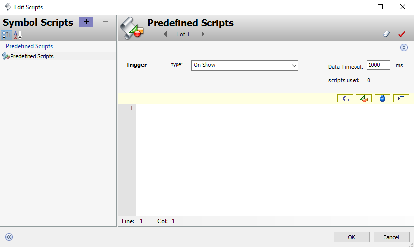
Enter the following script body, which records the previous navigation item and updates the current one:
'Script body begins...
'Record the previous item.
PreviousItem = CurrentItem;
'Get the latest current navigation item.
CurrentItem = MyViewApp.Navigation.Current;
'Script body ends.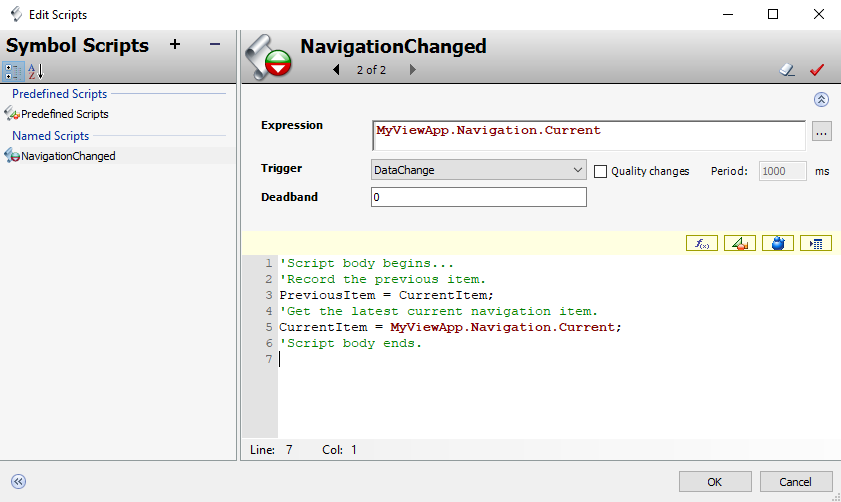
Reference: Module 13, Lab 25 — ResetNavBackButton Script (page 697)
Click the Add button again to create a second named script called ResetNavBackButton. Set the Expression to MyViewApp.Navigation.Current == PreviousItem and the Trigger to OnTrue. This script fires when the user navigates back to the previous item.
Enter the following script body:
'Script body begins...
'Reset Previous Item
PreviousItem = "";
'Script body ends.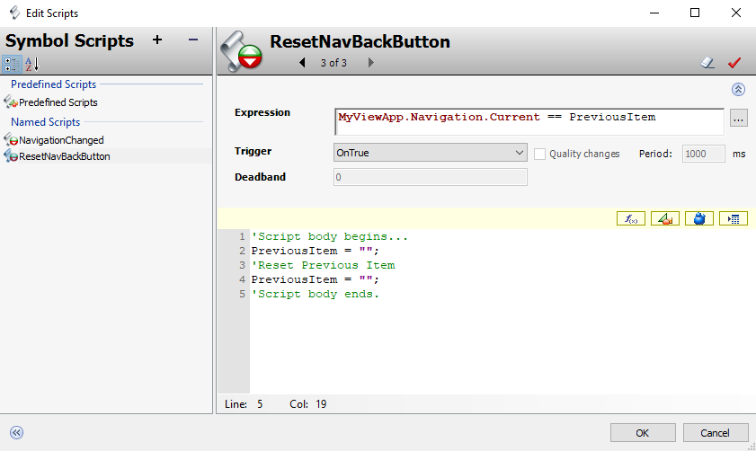
Reference: Module 13, Lab 25 — Adding the Button (page 697)
Click OK to close the Edit Scripts dialog. In the Tools pane, select the Button tool and add a button to the canvas with the text "Nav Back". The button element is named Button1. On the Properties tab, change the Appearance / Element Style property to Navigation.
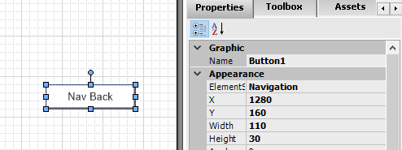
Reference: Module 13, Lab 25 — Action Scripts Animation (page 698)
Double-click Button1 to open the Edit Animations dialog. Click Add and select Action Scripts. Set the Trigger type to On Left/Key/Touch Up. Enter the following script body, which sets the current navigation to the previously recorded item:
'Script body begins...
'Set the Previous navigation item as the current navigation item
'of the application.
MyViewApp.Navigation.Current = PreviousItem;
'Script body ends.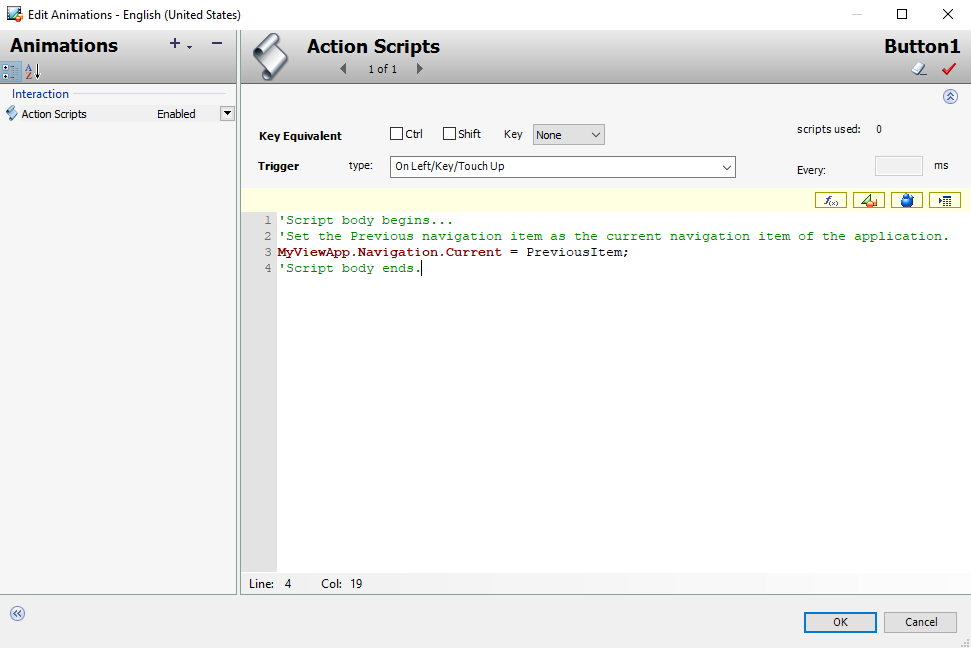
Reference: Module 13, Lab 25 — Disable and Element Style Animations (pages 699–700)
Add a Disable animation with the Boolean expression PreviousItem == "". This disables the button when there is no previous navigation item to go back to — for example, when the user first opens the ViewApp and hasn't navigated anywhere yet.
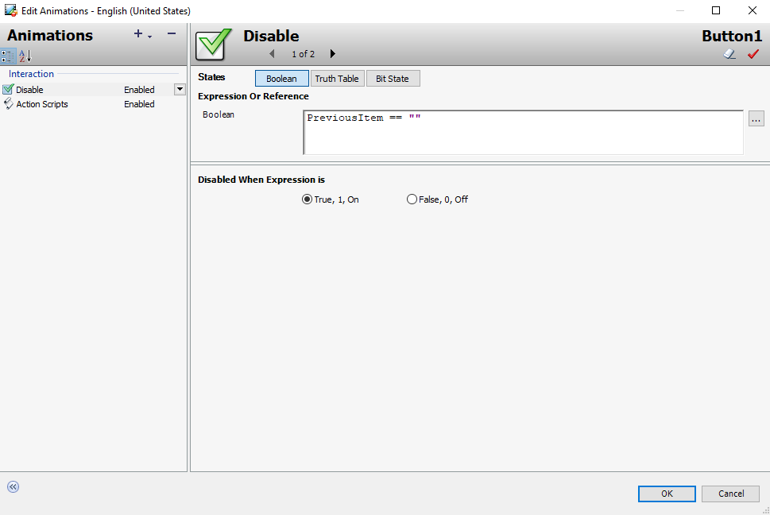
Next, add an Element Style animation to provide visual feedback. The Boolean expression is PreviousItem <> "". When True (a previous item exists), the Element Style is set to Navigation. When False (no previous item), the Element Style changes to Intensity2, giving the button a visually distinct inactive appearance.
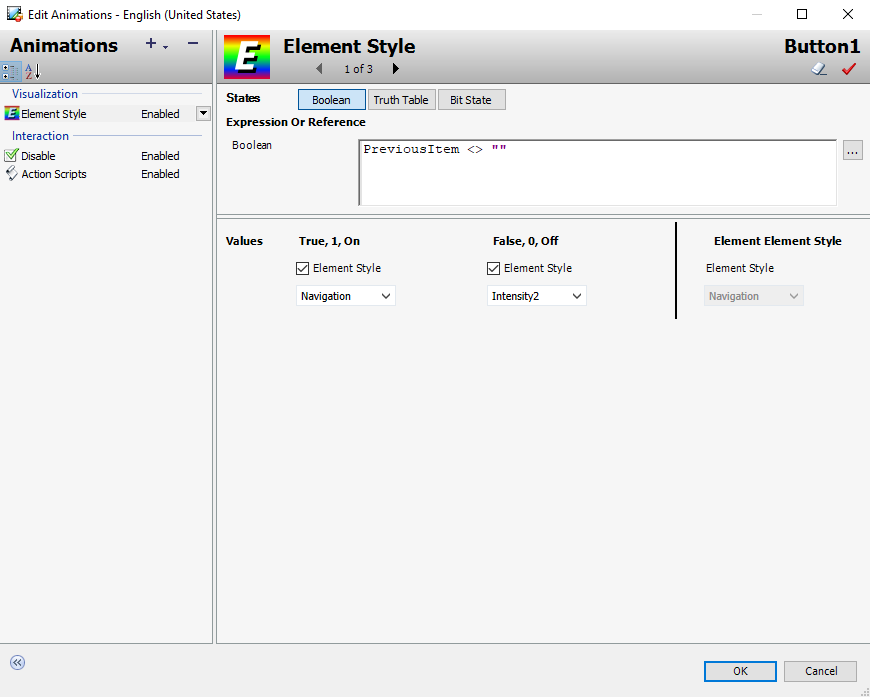
Click OK to close the Edit Animations dialog. Save and close the BackButton symbol, and check it in.
Reference: Module 13, Lab 25 — Main Layout Modification (pages 701–702)
Open the Main layout in the Layout Editor from the Graphics tab. Select Pane2 (which contains the NavBreadcrumbControl), right-click it, and select Add Pane → Right. A new pane named Pane11 is created to the right of Pane2.
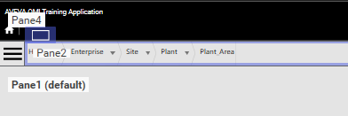
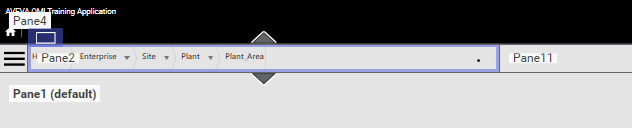
On the Toolbox tab, search for the BackButton symbol and drag it to Pane11. Then select the divider between Pane2 and Pane11 and slide it to reduce the width of Pane11 to fit the BackButton symbol. Save and close the Main layout, and check it in.
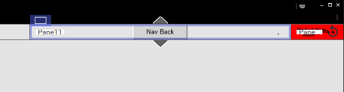
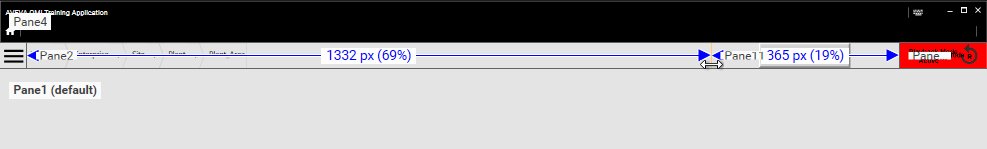
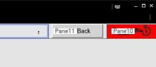
Reference: Module 13, Lab 25 — Testing (pages 703–704)
Switch to the ViewApp preview session to test your changes. When the preview opens, the Nav Back button appears at the top of the ViewApp, to the right of the NavBreadcrumbControl. Initially, the button is grayed out and disabled because you haven't navigated anywhere yet — the PreviousItem property is empty.
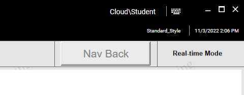
Make a note of your current navigation position (for example, Plant), then navigate to a different item such as Plant \ Packaging. Notice that the Nav Back button is now enabled because you've navigated to a different item — the PreviousItem property now holds a value.
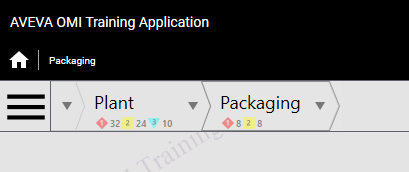
Packaging with alarm indicators">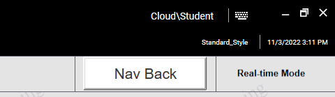
Click the Nav Back button. You navigate back to the previous item (Plant in this example), and the Nav Back button becomes disabled again. Navigate to different items and use Nav Back to verify the behavior works correctly.
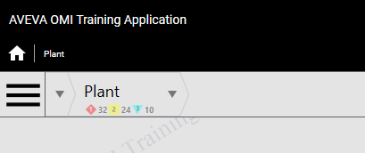
When you are finished testing, minimize the preview session and the ViewApp Editor.
Two String properties: CurrentItem (tracks the current navigation item) and PreviousItem (tracks the previous navigation item). Both are set to Private visibility with blank defaults.
DataChange trigger, with the expression MyViewApp.Navigation.Current. This ensures the script runs whenever the current navigation item changes, allowing it to record the previous item.
It disables the button when PreviousItem equals an empty string (""), preventing the user from clicking Nav Back when there's no previous location to return to.
When PreviousItem is not empty (True), the button uses the Navigation style. When empty (False), it switches to Intensity2, giving a visually distinct inactive appearance that matches the disabled state.
The Action Script sets MyViewApp.Navigation.Current to the value of PreviousItem, navigating back to the previous location. The ResetNavBackButton script then fires (OnTrue) and clears PreviousItem to an empty string, disabling the button again.
Source: AVEVA Operations Management Interface 2023 Training Manual, Module 13 – Scripting in Graphics, Lab 25
Pages 693–704